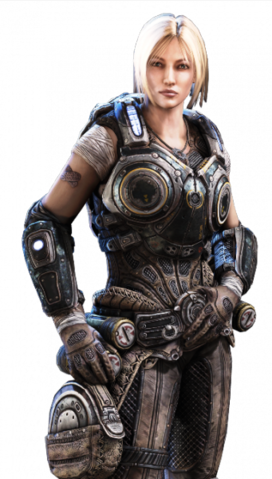

Saga Gears
INFORMACIÓN GENERAL
Gears of War es un videojuego de disparos en tercera persona, del género acción-aventura y estrategia, desarrollado por Epic Games utilizando el motor de videojuego Unreal Engine 3. Gears of War fue publicado por Microsoft Game Studios para la consola Xbox 360 el 26 de enero en Europa.El comienzo de la saga transcurre a comienzos de 14 años después del día E, después de la activación del martillo del alba en Sera. Marcus Fenix, El soldado de la CGO, es reintegrado en el ejército después de haber pasado cuatro años en prisión . Actualmente en el E3 del 2018 se anuncio la quinta entrega lineal de la saga.Se puede jugar en xbox360 ,Xbox one S y X en modo retrocompatible , y la ultimas entregas tambien en Windows10
ENTREGAS
PERSONAJES
 |
Marcus FenixMarcus Michael Fenix, líder del pelotón Delta e hijo del conocido científico militar Adam Fenix, es un soldado decidido e ingenioso que no ve sus actos como algo heroico, sino como una simple necesidad. Antes de su condena, Marcus era un soldado condecorado y un gran líder. Ahora, este héroe caído podría ser la última esperanza de la supervivencia de la humanidad. |
PERSONAJES
 |
Dominic SantiagoDominic "Dom" Santiago, soldado comando de las Fuerzas Armadas de la Coalición de Gobiernos Ordenados (CGO) . Es un duro guerrero que posee una actitud positiva incluso en los peores momentos. Liberó a su mejor amigo, Marcus Fenix , de la Cárcel de Máxima Seguridad de Jacinto y lo reclutó para el pelotón Delta |
PERSONAJES
|  | Anya StroudLa Teniente Anya Stroud fue una oficial Gear del ejército de la Coalición de Gobiernos Ordenados (CGO) y la única hija de la comandante Helena Stroud. Se unió al ejército CGO para seguir los pasos de su madre, pero a diferencia de ella, Anya se convirtió en una oficial de comunicaciones del CIC. Participo en las Guerras del Péndulo, en la Guerra Locust y finalmente en la Invasión Lambent solo que durante la invasión de los lambents ella se volvió gears de primera linea. |
PERSONAJES
 |
JD FenixJames Dominic Fenix, conocido comúnmente por el sobrenombre JD, es un ex-teniente de Coalición de Gobiernos Ordenados e hijo del legendario veterano de guerra, Marcus Michael Fenix y de la también ex-teniente de la CGO, Anya Stroud.Con un comportamiento un poco insensato y renegado, y propenso a parecerse al de su padre, JD es el protagonista de Gears of War 4. |